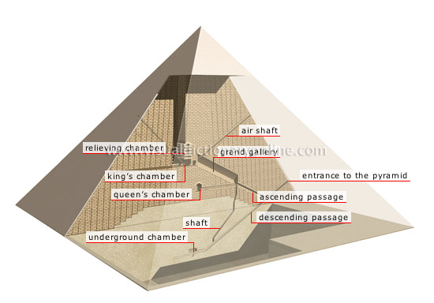

Architecture
Uncover the architectural marvels of Ancient Egypt, from the grandeur of the pyramids to the intricacies of temple design. Explore the techniques and symbolism embedded in the structures that defined the landscape.
Pyramids
The pyramids are among the most iconic structures in Ancient Egypt. Built as tombs for pharaohs, the Great Pyramid of Giza is a masterpiece of engineering and precision construction.
Temples
Ancient Egyptian temples served as places of worship and rituals. The temples often featured colossal statues, intricate carvings, and hieroglyphs that conveyed religious beliefs.